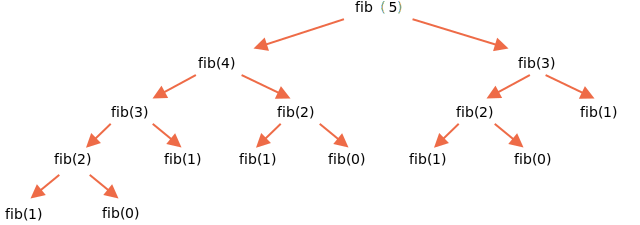

Пример работы:
function fib(n) { /* ваш код */ }
console.log(fib(3)); // 2
console.log(fib(7)); // 13
console.log(fib(77)); // 5527939700884757
Решение:
Числа Фибоначчи рекурсивны по определению:
Как всегда для решения с рекурсией определим базу рекурсии и шаг рекурсии:
База рекурсии будет: если n <= 1, то мы возвращаем 1 так как : первые два числа равны 1;
Любое число Фибоначчи получают как результат прибавления сложения двух предыдущих
чисел 'n', которое можна представить как Fn = Fn-1 + Fn-2 и так далее до 1 - это определяет
шаг рекурсии который мы и возвращаем.
function fib(n) {
if ( n<= 1 ) return n;
return fib(n - 1) + fib(n - 2);
}
// Для большей наглядности представим это через тернарный оператор:
function fib(n) {
return n <= 1 ? n : fib(n - 1) + fib(n - 2);
}
// проверим работу функции через рекурсию:
console.log( fib(3) ); // 2
console.log( fib(7) ); // 13
console.log( fib(25) ); // 75025
console.log( fib(40) ); // 102334155
console.log( fib(77) ); // 5527939700884757 - но вычисляется ну оooчень долго !
Как видно, функция через рекурсию при больших значениях 'n', будет работать очень долго. Например,
fib(77) может повесить браузер на некоторое время, съев все ресурсы процессора. Это потому, что
функция порождает обширное дерево вложенных вызовов. При этом ряд значений вычисляется много раз
снова и снова.
Например, посмотрим на отрывок вычислений для fib(5):
...
fib(5) = fib(4) + fib(3)
fib(4) = fib(3) + fib(2)
...
Здесь видно, что значение fib(3) нужно одновременно и для fib(5) и для fib(4). В коде оно будет вычислено два раза, совершенно независимо. Взгляните на полное дерево рекурсии:
Схема вызовов:
Можно заметить, что fib(3) вычисляется дважды, а fib(2) – трижды. Общее количество вычислений растёт намного быстрее, чем n, что делает его огромным даже для n=77.
Но для выполнения отдельного условия надо отказаться от рекурсии и использовать совершенно другой алгоритм на основе цикла.
Вместо того, чтобы начинать с n и вычислять необходимые предыдущие значения, можно написать цикл,
который начнёт с 1 и 2, затем из них получит fib(3) как их сумму, затем fib(4) как сумму предыдущих
значений, затем fib(5) и так далее, до финального результата. На каждом шаге нам нужно помнить только
значения двух предыдущих чисел последовательности.
Вот детальные шаги нового алгоритма.
function fib(n) {
let a = 1; - здесь а = fib(1)
let b = 1; - здесь b = fib(2)
for (let i = 3; i <= n; i++) { -так как первые значения последовательности 'a' и 'b' уже заданы
let c = a + b; -здесь получим c = fib(3) как их сумму
a = b; здесь уже переопределили как a = fib(2)
b = c; здесь уже переопределили как b = fib(3)
}
return b; -здесь получили fib(3)
}
// проверим работу с использованием алгоритма на основе цикла:
console.log( fib(3) ); // 2
console.log( fib(7) ); // 13
console.log( fib(25) ); // 75025
console.log( fib(40) ); // 102334155
console.log( fib(77) ); // 5527939700884757
Цикл начинается с i=3, потому что первое и второе значения последовательности заданы a=1, b=1.
Такой способ называется динамическое программирование снизу вверх. Это намного быстрее рекурсии и не требует повторных вычислений.